Modelica Newsletter 2012-3
Newsletter #3 of 2012 (News from Modelica Association, from Modelica related projects and from Modelica tool vendors)
Table of Contents
- Letter from the Board
- Modelica Association News
- Modelica'2012 Conference
- North America Modelica Users' Group
- Call for Contributions - Modelica 3.3 Book
- Free Modelica Book
- Modelica_Synchronous library
- Modelica_DeviceDrivers library
- Educational News
- Modelica Tutorial in Dresden on Feb 5, 2013
- CFP OpenModelica and MODPROD Workshops 2013
- Dymola and Modelica Training from Modelon
- Training courses in German at BAUSCH-GALL GmbH
- Workshop at SCS SpringSim 2013
- Library News
- Optimization Library 2.1 for Dymola
- Statistics and HumanComfort Library
- New libraries in Dymola and CATIA V6
- Vendor News
- XRG Canvas 1.0
- XRG ModelOpt 1.0
- FMI Blockset for Simulink
- CyDesign Labs Acquires deltatheta UK
- Modelon FMI ToolBox for CarMaker
- OpenModelica 1.9.0 Beta2 Release
- Announcing Dymola 2013 FD01
- Generating FMUs for Co-Simulation in Simulink®
- AMESim Rev 11 SL2
- Modelon FMI Add-In for Excel
- Modelon FMI Toolbox for MATLAB
Letter from the Board
Dear Modelica interested,
Since the Modelica Association board has been expanded and consists now of 9 persons, it is no longer practical to coordinate an article jointly authored by all board members. Therefore, from now on each newsletter will include a "letter from the board" written by one or more board members on a topic related to their specific areas of interest. This will hopefully add some variety to the topics which are covered.
The 9th Modelica Conference took place beginning of September in Munich. It was the largest Modelica conference ever and we got a lot of positive feedback for the conference. You find more details in the article below.
The Modelica Association Project "Functional Mockup Interface (FMI)" is continuing the work from the MODELISAR project and the group is currently working to finalize the FMI 2.0 release. In parallel, a new web page dedicated solely to FMI has been released: https://fmi-standard.org. Furthermore, a public svn server has been setup to provide more information to the FMI community, in particular this server hosts an FMI compliance checker (to check and simulate FMUs), as well as representative FMUs exported from different tools. The latter are useful in order that a tool can easily check whether it can import FMUs generated from other tools. It is planned to considerably increase the number of FMUs stored here in the near future. If your tool exports FMUs, we strongly encourage you to submit example FMUs from your tool to help improve tool interoperability and strengthen the FMI standard.
The usage of Modelica in North America is accelerating with respect to previous years. This is likely the result of the increased activity of Modelica tool vendors in North America, as well as the usage of Modelica in DARPA programs, such as META, C2M2L, and FANG. To support this trend, a North America Modelica User Group is being founded. This group will consist of Modelica Association members, Modelica power users and several Modelica tool vendors. The Modelica Association will actively support this user group and we expect this partnership to help significantly increase the use of Modelica in this important market.
If you have interesting news for the Modelica community, please contact the newsletter editor (Michael Tiller) for information on how to submit newsletter articles for possible inclusion in the next newsletter. The deadline for articles for the next newsletter is Feb. 15, 2013.
Best wishes from:
Martin Otter (Chairman of the Modelica Association)
Modelica Association News
Modelica'2012 Conference
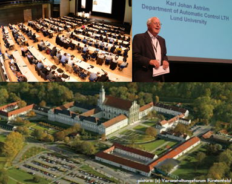
The 9th International Modelica Conference was held in Munich, Germany on September 3 - 5, 2012. It was organized by DLR and by the Modelica Association. Here are some highlights:
- 330 participants from 21 countries visited the conference. 60 % of them have been from industry.
- 2 keynotes have been given: From Dr. Johann Bals of DLR Institute of System Dynamics and Control, and from Prof. Karl Johan Aström from Lund University, Department of Automatic Control (see top right part of the figure to the right).
- 80 regular papers and 23 poster papers have been presented.
- 8 tutorials have been given.
- 10 vendor sessions showed the latest news of Modelica and FMI tools.
- 18 exhibitors demonstrated their software in the exhibition area
- 5 libraries competed for the award of the best free library. The winners are:
-
First price:
"PNlib - An Advanced Petri Net Library for Hybrid Process Modeling" by Sabrina Proß and
Bernhard Bachmann (University of Applied Sciences, Bielefeld, Germany).
Second price:
This time the Modelica Association awarded two second prices to
"A Modelica Library for Industrial Control Systems" by Marco Bonvini and Alberto Leva (Politecnico di Milano, Italy), and to
"A Modelica Library for Real-Time Coordination Modeling" by Uwe Pohlmann, Stefan Dziwok, Julian Suck, Boris Wolf, Chia Choon Loh, and Matthias Tichy (University of Paderborn, Germany, and University of Gothenburg, Sweden)
The complete conference material including the proceedings book and the single paper files (that is a copy of the USB-stick distributed at the conference), can be downloaded from here here (a zip-file with 168 Mbyte size). Soon, the proceedings book and the single paper files (from the USB Stick) will also be available from Linköping University Press, in order that every paper can be linked by a unique web address.
Note, the next Modelica conference will take place in Lund, Sweden in March 2014, and will be organized by Modelon AB, Lund University, and the Modelica Association.
This article is provided by Martin Otter (DLR-SR) and Dirk Zimmer (DLR-SR)
North America Modelica Users' Group

Over the last few years, Modelica has spread dramatically beyond Europe and is enjoying growing popularity in North America. In order to address the issues that are often prevalent – and sometimes unique – within North American industry and academia, the North America Modelica Users’ Group has been established, with the support of the Modelica Association.
If you are a Modelica user or you are considering Modelica for your physical modeling projects, and work in North America then this is the ideal forum for exchanging ideas, addressing modeling problems and promoting the North American perspective within the Modelica Association.
The North America Modelica® Users’ Group is a tool-neutral organization, founded to support users within North America, and to promote the use of Modelica for engineering model development in the region. The goal of the group is to provide a forum for sharing ideas from the global Modelica community, give feedback for further development and to discuss and resolve model-development issues that may be specific to North America.
Membership is free, and open to all Modelica users, vendors and engineering model developers who are interested in finding out more about the language and community.
- Web site:
- http://na.modelica-users.org
- Contact us:
- info@na.modelica-users.org
- Membership inquiries:
- membership@na.modelica-users.org
This article is provided by Paul Goossens (Maplesoft) and Michael Tiller (Xogeny) and Hubertus Tummescheit (Modelon AB) and Chris Paredis (Georgia Institute of Technology)
Call for Contributions - Modelica 3.3 Book
This is to inform about the coming book to be published by IEEE-Wiley, tentative title “Principles of Object Oriented Modeling and Simulation with Modelica 3.3”.
This is an update of my previous book, “Principles of Object Oriented Modeling and Simulation with Modelica 2.1". About 90% is now done.
The objective is to spread the usage of Modelica and to teach Modelica.
In the previous book I got many contributions, example models, from members of Modelica Association. Thanks a lot! (there is a long list of acknowledgements)
In this new book I would like to update and extend the set of examples and hope for additional contributions. Please contact me (peter.fritzson@liu.se) regarding the updated book and what you think can be improved and what it should contain.
As for my previous book, I have negotiated with the publisher that that the examples of the book are available on the web freely downloadable, e.g. in the form of the tutorial DrModelica electronic document. This can also be made into an html document.
This article is provided by Peter Fritzson (Linköping University)
Free Modelica Book
Wouldn't it be great if there was a book about Modelica available for free on the internet? Imagine if new users Googled their Modelica related questions and the hits they got back pointed them directly to a book on Modelica discussing the topic they were interested in? Well, I think it would be fantastic to have quality, searchable material about Modelica at everyone's fingertips for free. For this reason, I've started a Kickstarter Project in an effort to raise funds to write just such a book.
In case you are not already familiar with Kickstarter, it provides a way to contributing funding to worthwhile projects. When you pledge money to a project, your credit card will not be charged unless the project meets its funding goal. So if you think Modelica is a great technology and you'd like to help spread the word about why Modelica is so great, please pledge a contribution to this project. This project is an experiment to see if the Modelica community will embrace this kind of community development project. Keep in mind, this project won't happen without your support..
If you want to know what such a book would look like, please check out the sample chapter already available. Additional information about the project along with a draft Table of Contents can be found at http://book.xogeny.com/. Already, several members of the Modelica Community have pledged their support, but not nearly enough. Please contribute to this project and help bring a free Modelica book to the internet and help lower the learning curve on Modelica so we can continue to grow our community. We only have until December 4th to reach the funding level or the project will expire. Please don't wait, contribute today.
Thanks for your support!
This article is provided by Michael Tiller (Xogeny)
Modelica_Synchronous library
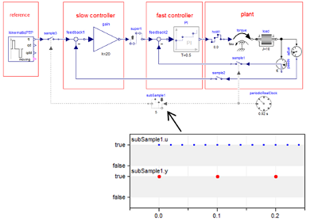
The Modelica_Synchronous library from DLR-SR is an open source Modelica package under Modelica License 2 to precisely define and synchronize sampled data systems with different sampling rates. It provides a convenient to use block library to utilize the new synchronous language elements introduced in Modelica 3.3 and was presented at the last Modelica Conference (“A Library for Synchronous Control Systems in Modelica”). Features include:
- Periodic clocks and event based clocks for synchronous execution of clocked partitions (introduced in the Modelica Language Specification 3.3). Therefore, the sample period for a partition needs to be defined only at one location.
- Definition of multi-rate control systems with elements to sub-sample, super-sample and shift-sample partitions synchronously.
- Optional simulation of quantization effects, computational delay or noise.
- Automatic discretization of continuous-time equations for utilization in sampled data systems. This is especially useful to utilize continuous-time nonlinear, inverse models in a discrete-time control system.
- It is planned to include this library in a future version of the Modelica Standard Library (after an evaluation period and once several Modelica tools support the synchronous language elements).
The library is available for download at https://www.modelica.org/libraries (it will also be distributed with Dymola 2013 FD01).
This article is provided by Bernhard Thiele (DLR-SR) and Martin Otter (DLR-SR)
Modelica_DeviceDrivers library
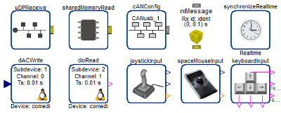
The Modelica_DeviceDrivers library from DLR-SR is an open source Modelica package under Modelica License 2 that interfaces hardware drivers to Modelica models. It unifies previous developments concerning device driver support in Modelica, see Interactive Simulations and advanced Visualization with Modelica and Modelica for Embedded Systems (Modelica'2009 conference). The functionality covered by this library has been used internally at DLR for several years, such as for Driver-in-the-Loop simulation and for the DLR Robot Motion Simulator, as well as recently in the commercial Robot Motion Simulator from Grenzebach. The previously fragmented functionality was streamlined, improved, and extended to a coherent cross-platform library. Main features:
- Cross-platform (Windows and Linux).
- (Soft) synchronization of a simulation with real time.
- Support for Keyboard, Joystick/Gamepad, and 3Dconnexion Spacemouse.
- Support for a universal packaging concept to pack Modelica variables in a graphical and convenient way into a bit vector and transport such a bit vector via UDP or Shared Memory. Additionally, support for CAN-bus is prototypically available (requires the Softing CAN Layer2 API drivers).
- Support of the Linux control and measurement device interface for digital and analog IO (Comedi interface).
All device drivers are made available via external Modelica functions. Furthermore, high level interfaces on these functions are provided via Modelica blocks: The first interface uses Modelica 3.2 functionality only (when-clauses and sample-operator). The second interface uses the synchronous language elements introduced in Modelica 3.3 and is based on clocks (works together with the new Modelica_Synchronous library).
The library is available for download at https://www.modelica.org/libraries (it will also be distributed with Dymola 2013 FD01).
This article is provided by Bernhard Thiele (DLR-SR) and Tobias Bellmann (DLR-SR)
Educational News
Modelica Tutorial in Dresden on Feb 5, 2013
In this one day tutorial, the Fraunhofer IIS/EAS experts introduce to the basics of Modelica. The participants learn more about concepts, use in modeling, handling of established simulators and evaluation. This tutorial is the ideal introduction into Modelica.
Who should take part?
Users and everybody interested in Modelica with no or just a little knowledge of the language. The tutorial is of special interest for engineers of all disciplines, mathematicians, and nature scientists.
It is held on Feb 5, 2013 at the EAS Division of Fraunhofer IIS in Dresden. Up to 10 participants are welcome. The tutorial language is German. More information can be found on www.eas.iis.fraunhofer.de.
This article is provided by Daniel Pastewka (Fraunhofer-Institute for Integrated Circuits IIS) and Christoph Clauss (Fraunhofer)
CFP OpenModelica and MODPROD Workshops 2013
Location: Linköping University, Sweden
- 6th MODPROD Workshop on Model-Based Product Development, Feb 5-6, 2013
- 4th OpenModelica Annual Workshop, Feb 4, 2013
Keynotes for MODPROD Workshop
- Moritz Diehl, Professor at University Leuven, Belgium. Director of OPTEC Center. “Modeling Tools for Optimal Control and Embedded Optimization”,
- Jon Whittle, Professor and Chair of Software Engineering at Lancaster University, UK. “Model- Driven Development: Does anyone in industry really use it?“.
- Dr. Stefan-Alexander Schneider, Specialist, BMW Group, Berlin, Germany.” Virtual System Prototyping in Automotive Industry”.
The workshops are concerned with, but not limited to, the following themes:
MODPROD workshop
Cyber-physical system modeling. Integrated hardware-software modeling. Hardware modeling. Software modeling. Multi-body systems. Multi-domain/Multi-physics, e.g. electrical-hydraulic. Modelica-UML-SysML. Modeling and simulation tools. CAD modeling. Design optimization and analysis. Hardware in the loop simulation. Real-time and embedded system modeling. Electrical/hydraulics modeling.
OpenModelica Annual Workshop
Applications of OpenModelica. Modelica Libraries with OpenModelica. OpenModelica tool developments. Solver issues in OpenModelica. Meta modeling and hardware/software modeling. Code generation in Openmodelica. Parallel compilation and execution. Model-based optimization.
For more information, see www.openmodelica.org and www.modprod.liu.se.
This article is provided by Peter Fritzson (Linköping University)
Dymola and Modelica Training from Modelon

Modelon offers training for Dymola, Modelica, model libraries, and modeling principles from our training sites in Sweden, Germany, and USA. We offer open classes with our standard courses as well as private and custom training at customer sites world-wide.
Upcoming Events
- Sweden, November 5 - 8
- Germany, December10 - 14
- USA, January 28 - February 1
See our training schedule for more training events in 2013.
Our popular Dymola Introduction Course is developed to facilitate accelerated learning and high productivity with the technology leading Modelica toolchains. See full course listing and register at www.modelon.com/training.
This article is provided by Magnus Gäfvert (Modelon AB)
Training courses in German at BAUSCH-GALL GmbH
BAUSCH-GALL GmbH offers the following training classes in German language either in our office or at your site:
- Next 2-day training course to Dymola and Modelica in our office on December 3rd-4th, 2012
- Two-day training course on AirConditioning Library is available on request.
Information about training courses of BAUSCH-GALL GmbH. All classes are also offered at your location.
This article is provided by Ingrid Bausch-Gall (BAUSCH-GALL GmbH)
Workshop at SCS SpringSim 2013

3rd International Workshop on Model-driven Approaches for Simulation Engineering (Mod4Sim13)
Call for Papers: 3rd International Workshop on Model-driven Approaches for Simulation Engineering, part of the Symposium on Theory of Modeling and Simulation (SCS SpringSim 2013)
The workshop aims to bring together experts in model-based, model-driven and software engineering with experts in simulation methods and simulation practitioners, with the objective to advance the state of the art in model-driven simulation engineering. The call for papers includes the topics of "Domain Specific Languages for Modeling and Simulation" and "Simulation Model Portability" which would be particularly relevant for the Modelica and FMI communities, respectively.
April 7-10, 2013, San Diego, CA (USA)
Papers Due: November 1, 2012
Accepted papers will be published in the conference proceedings and archived in the ACM Digital Library, IEEE Xplorer and IEEE CS Digital Library. The Symposium is co-sponsored by IEEE.
For further details, please refer to http://www.sel.uniroma2.it/Mod4Sim13
Contact Information
Andrea D'Ambrogio and Daniele Gianni (workshop co-chairs)
Emails: dambro@uniroma2.it and danielegmail-mod4sim@yahoo.it
This article is provided by Daniele Gianni (European Space Agency)
Library News
Optimization Library 2.1 for Dymola
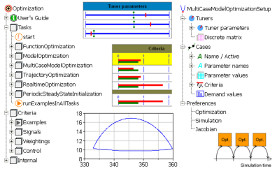
A new version of the Optimization Library from DLR-SR is available. The Optimization Library enables the user to interactively define and solve different types of multi-criteria optimization tasks:
- Optimizing inputs of a Modelica function.
- Optimizing parameters of a Modelica model by one or more simulations, e.g. for controller parameter design or model parameter identification.
- Optimizing the input signals of a Modelica model, i.e. optimizing trajectories.
- Optimizing the initial values of a Modelica model to find a periodic solution for the non-linear dynamics.
- Optimizing parameters of a Modelica function inside a sampled data system, e.g. for nonlinear model predictive control.
The new features of version 2.1 are:
- Independent simulation runs are locally parallelized on multi-core machines. Thus, the computational performance of an Optimization run including many model simulations is considerably increased (up to factor 3-4 on a quad-core machine).
- Discrete tuner parameters can be defined in the setup GUIs and can be handled by several optimization algorithms.
- Computing the criteria of all combinations of discrete tuner parameters is enabled by a Systematic Tuner Variation algorithm.
The library is available since the release of Dymola 2013.
This article is provided by Andreas Pfeiffer (DLR-SR)
Statistics and HumanComfort Library
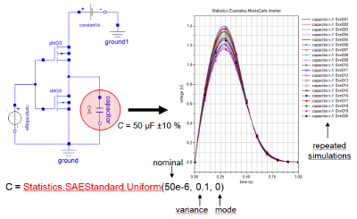 New: Statistics Library
The Statistics Library is developed by Fraunhofer-Institut IIS in Dresden. Version 1.3 of this library has been released in September.
The Statistics Library is designed to handle statistical analysis tasks using Modelica functions by variation of parameters and variables. In order to analyze the performance and robustness of system models, there are two main applications of the library:
- Monte Carlo analysis, where the model parameters are calculated by statistical distribution functions. Repeated simulation varies the parameters according to the chosen distribution.
- Noise Generation: The sampled call of a statistical distribution function generates noise during transient simulation.
The Statistics Library includes a set of statistical functions based on standard SAE J2748 and supports:
- Usage of the same model for nominal and Monte Carlo analysis
- Possibility to assign different statistical distributions to one parameter
- Continuous and discrete distributions which may be user-defined
- Possibility to specify correlation between parameters and variables
- Independent random number generation for each parameter and variable
- Reproducibilty of a Monte Carlo simulation
The HumanComfort Library is developed by XRG Simulation GmbH for use in
automotive, aircraft and building simulation.
Version 1.2 of this Library was released October. News in this version are:
- Condensation at cold surfaces (cooling ceilings, windows)
- Moisture transport connector
- More models for pressure drop and convective heat transfer
- Base model summaries
- More application examples (automotive cabin, bungalow)
- Tested on Dymola 2013 with Modelica Standard Library 3.2
For more information see HumanComfort Library at our homepage.
Our range of Modelica Libraries is available at
http://bausch-gall.de/molib.
If you need more information, please contact
info@bausch-gall.de.
This article is provided by Ingrid Bausch-Gall (BAUSCH-GALL GmbH)
New libraries in Dymola and CATIA V6
In addition to all improvements in the Dymola program, we are very proud to present a range of new libraries from Modelon.
- Engine Dynamics Library is used for combustion engine system modeling, simulation and analysis, including the complete gas exchange. It is well suited to represent transient engine response and related engine control. Applications include control design with the purpose of reducing emission transients from the engine, transient exhaust condition modeling for optimum EATS operation conditions, and engine response dynamics. The Engine Dynamics Library utilizes a mean value combustion model for torque, charge flow and exhaust condition modeling.
- Liquid Cooling Library is targeted at liquid cooling system design with compressible or incompressible flow. Applications include engine cooling, battery thermal management, and cooling of power electronics and machines in automotive, industrial equipment and process industries.
- Electric Power Library provides a framework for simulation and analysis of electric power systems, both steady state and transient operation. The user can model the complete power plant from the energy source (oil, gas, hydropower or another renewable source such as wind) all the way through generator and power grid to the end consumer.
- Hydro Power Library provides a framework for modeling and simulation of hydropower plant operation. It enables performance analysis and optimazation of the operation of hydropower plants, for example, power plants with multiple reservoirs and multiple turbines in order to maximize the overall efficiency.
The library is suitable for simulation of transient operation such as load rejection to verify that the control system can handle these situations. It can also be used for studying control strategies to cope with the rapid load changes that become more frequent as other renewable, less controllable, sources of energy are increasingly used. Planning of commissioning tests and procedures can be set-up, thereby reducing the risk of unexpected events and minimizing costly tests done on the actual plant.
- Thermal Power Library provides a framework for modeling of thermal power plant operation including transient operation. Different plant designs and their respective dynamic behavior can be studied already in the concept design phase. A particular advantage is the ability to simulate dynamic as well as steady-state behavior using the same model. In addition to covering the entire steam cycle, it can be used for the flue gas side and combustion models.
This article is provided by Dag Brück (Dassault Systèmes AB, Lund)
Vendor News
XRG Canvas 1.0

The new XRG Canvas software is a post processing tool for easy and fast visualization of 1-d simulation results. The basic concept is to arrange numerical result values on a selectable background image. That enables the user to generate analyzing figures with self designed background pictures in an efficient way.
A batch mode allows the generation of a series of analyzing images out of a high number of result files with one click. The analyzing images can be created for different simulation times and different result files, whereby the desired simulation times can be chosen intuitively with a time slider. The numerical result values to be displayed on the background image can be selected by a double click in a variable browser. The font, color and size of the corresponding text item can be selected as usual in any text editor. The tool is not limited to a certain simulation program, although the first version only supports simulation results from Dymola® and OpenModelica, in the near future more result file types (e.g. MATLAB/Simulink®) will be supported.
The demo software for Windows® operating systems is available for free (Proceed to download site).
This article is provided by Stefan Wischhusen (XRG Simulation GmbH)
XRG ModelOpt 1.0
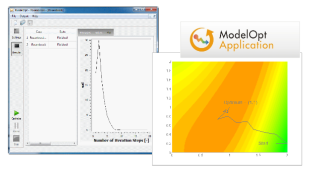
ModelOpt is a an optimization application for minimizing cost functions or deviations from a design or measurement value. It uses Dymola®/Modelica® for modeling and target function definition as well as for simulation (from version Dymola 6.1 to the latest version). A simple and intuitive graphical user interface guides the user step by step through an optimization project.
Any model depending on float parameters can be optimized by a selection of robust algorithms which are designed for either searching a local or even a global optimum of a target function. The progress of the iterative algorithm can be observed in a plot diagram or from a table indicating the currently best solution. A separate batch-mode allows to investigate one and the same model for different scenarios in a single optimization run.
The demo software for Windows® operating systems is available for free (Proceed to download site).
This article is provided by Stefan Wischhusen (XRG Simulation GmbH)
FMI Blockset for Simulink
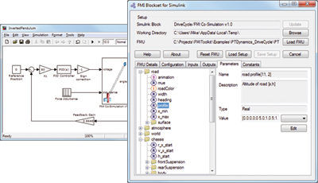
Claytex have released a new tool called FMI Blockset for Simulink® which enables FMI compliant models to be imported in to Simulink.
The FMI Blockset currently supports the co-simulation 1.0 interface. This means that the solver built in to the FMU is used to simulate that model and the Simulink solver is used to simulate the Simulink part of the system with the two systems exchanging data at discrete times. The advantage of this is that appropriate solvers can be used for both parts of the model improving the overall simulation performance.
For further information please see http://www.claytex.com/products/fmi-blockset-for-simulink/ or contact sales at claytex.com
This article is provided by Mike Dempsey (Claytex Services Limited)
CyDesign Labs Acquires deltatheta UK
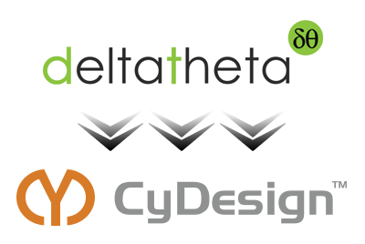
CyDesign Labs, Inc., the developer of the CyDesign platform for model-based design optimization, announced at the 9th International Modelica Conference the acquisition of deltatheta UK Limited, a technology provider in Modelica-based modeling and simulation tools.
deltatheta's technologies will be incorporated into CyDesign’s cloud-based platform CyDesign Studio, a web-accessible simulation and modeling environment. This includes the Modelica SDK, an embeddable Modelica compiler and API for development of Modelica-based tools and integration of Modelica support into other software.
Peter Harman, former director of deltatheta UK Limited, has joined CyDesign Labs as Director of Technology to lead the development of the Modelica-based simulation toolset, as a continuation of the technologies developed by deltatheta. Coventry-based deltatheta UK Limited has been renamed CyDesign Limited where research and development initiatives centered around Modelica tools will be expanded.
Follow CyDesign Labs news on Facebook, LinkedIn or Twitter
This article is provided by Derek Cheng (CyDesign Labs)
Modelon FMI ToolBox for CarMaker
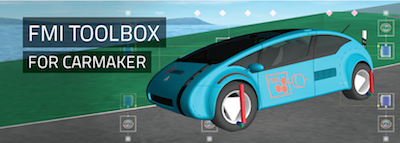
The FMI Toolbox for CarMaker by Modelon enables the flexible and automatic extension of the IPG CarMaker® by high-fidelity system models from state-of-the-art modeling tools using the Functional Mock-up Interface standard.
The Toolbox allows advanced physical modeling within the CarMaker virtual test driving and integration platform for early system validation. FMUs of e.g. (electrified) drive trains, steering and braking systems or suspensions are seamlessly integrated into CarMaker by fully supporting its ModelManager mechanism for component handling.
Key Features:
- Import and simulation of Functional Mock-up Units (FMUs) in IPG CarMaker®
- Easy-to-use GUI provides plug-and-play functionality
- Supports CarMaker ModelManager mechanism for seamless model integration
- Supports FMI for Co-Simulation and ModelExchange in version 1.0
- Supports the use of multiple FMUs simultaneously
This article is provided by Anton Haumer (Modelon GmbH)
OpenModelica 1.9.0 Beta2 Release
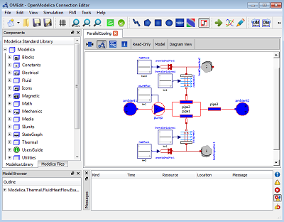
OPENMODELICA IS AN OPEN-SOURCE Modelica-based cyber-physical mathematical modeling, architectural description and simulation environment intended for industrial and academic usage. Its long-term development is supported by a non-profit organization – the Open Source Modelica Consortium (OSMC), www.openmodelica.org . The OpenModelica 1.9.0 Beta2 release includes the following highlights:
- Much better simulation support for the next release of the MSL (3.2.1), e.g., 118 example models (73%) now simulate compared to 30% in the 1.9.0 Beta1 release.
- Much better simulation support for MSL 3.1, e.g. 108 example models now simulate compared to 74 models for the Beta1 release and 36 models for the 1.8.1 version. All MultiBody example models except 2 now simulate.
- Better simulation support for several other libraries, e.g. more than twenty examples simulate from ThermoSysPro, and all but one model from PlanarMechanics simulate.
- This beta version does not generally support simulation of the Fluid library, 17% the next release of the MSL (3.2.1) Fluid example models simulate. Better Fluid support is planned to be available soon.
- Functional Mockup Interface FMI 1.0 co-simulation, with OpenModelica as master, and improved FMI import.
- Faster matching and dynamic state selection algorithms give much faster model compilation.
- Full version of Python scripting.
- Prototype of 3D graphics visualization.
- Parallel algorithmc Modelica support (ParModelica) for efficient portable parallel algorithmic programming based on the OpenCL standard, for CPUs and GPUs.
- Enhanced ModelicaML version for requirements-driven modeling available for the latest Eclipse and Papyrus versions. GUI specific adaptations. Automated model composition workflows (used for model-based design verification against requirements) are modularized and have improved in terms of performance.
The development work is organized by the expanding Open Source Modelica Consortium, currently 44 organizations.
For more information, see www.openmodelica.org .
This article is provided by Peter Fritzson (Linköping University)
Announcing Dymola 2013 FD01
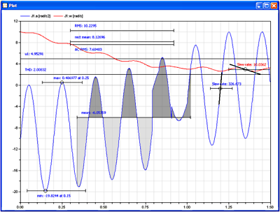
The next release of Dymola is scheduled for the end of November 2012. Some of the new features are briefly described below.
Post-processing
It is possible to perform operations such as minimum, maximum, mean value and RMS on plotted curves as shown in the diagram. Dymola also introduces a calculator for signals.
Linear systems analysis
The Linear Systems Library has gone through a major revision and provides new capabilities and improved convenience. A new menu with linear analysis functions is available.
User-defined favorite models
It is possible to define packages with your own collections of favorite models by introducing shortcuts to models. When dragging from such a shortcut, a component of the original model is created. Modifiers on the shortcut are copied to the inserted component.User-defined menus and toolbars
It is possible to extend the graphical user interface of Dymola with menus and toolbars from which Modelica functions can be called. For example, you can create a new menu "My Functions" which contains a sub-menu "My Matrix Functions" and two menu items "sin" and "cos".
Other enhancements
- Improvements in graphical editor and text editor.
- User-defined variable selections for result file.
- Support for Functional Mockup Interface according to the FMI 2.0 Beta 4 specification.
- FMI source code export (previously only binary).
- Support for synchronous language features and state machines of Modelica 3.3 for embedded control.
This article is provided by Dag Brück (Dassault Systèmes AB, Lund)
Generating FMUs for Co-Simulation in Simulink®
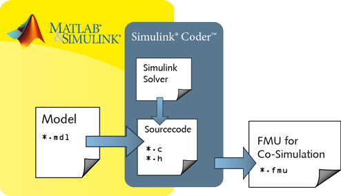
The Functional Mockup Interface (FMI) is a standard for the platform independent exchange of simulation models and for co-simulation. The new FMI target developed by ITI for the Simulink® Coder (TM) allows converting Simulink® models to Functional Mockup Units (FMU) for Co-Simulation. The generated FMU includes both the model’s functionality and the Simulink solver, which enables any tool supporting FMUs for Co-Simulation to run the unit without Simulink.
This article is provided by Manuela Joseph (ITI GmbH)
AMESim Rev 11 SL2
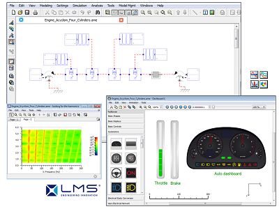
LMS International is proud to announce the latest release of its Imagine.Lab AMESim product, Rev 11 SL2, which will be shipping early November. With this release, LMS continues to build upon its Modelica Platform, adding new features that support a wide variety of workflows. The latest offering includes:
- A full-featured Modelica Editor for textual editing of Modelica models
- A Modelica Assembly tool for graphical editing of Modelica models
- A Modelica Import Assistant tool for importing Modelica models into the native AMESim platform
- Support for FMI for Model Exchange for Modelica models
- A Dashboard tool for enhanced visualization of simulation results through 2D Post-Processing animations, with standard and user-created toolboxes
All these features reinforce the strengths of the existing AMESim modeling platform. LMS remains committed to the concept of merging the best of both worlds, allowing developers to integrate their Modelica models with AMESim’s extensive library of detailed, multi-domain physical models. The latest Modelica Import Assistant makes it easier than ever to simulate Modelica models in AMESim’s user-friendly simulation environment, and new Dashboard features and post-processings tools better enable developers to analyze their systems.
This article is provided by Michael Sasena (LMS International) and Stéphane Neyrat (LMS International)
Modelon FMI Add-In for Excel
The FMI Add-In for Excel version 1.0.1 is available and includes improvements and optimizations to streamline its use with large-scale and complex systems.
The FMI Add-In for Excel allows for interaction and analysis of system models in Microsoft Excel, based on Functional Mockup Units (FMU).
The power of Microsoft Excel combined with the flexibility and portability of the open-standard model format from Functional Mockup Interface (FMI) allows for a highly efficient workflow for experiment setup and reporting for design explorations, batch simulations, and more.
The FMI Add-In for Excel is developed in close contact with Modelon customers and is based on our extensive understanding and experience of industry needs. The product is tailored to fit the needs in model based engineering processes in all industries.
Key features
- Import and simulation of Functional Mock-up Units (FMUs) in Microsoft Excel®
- Parameter sweeps and sensitivity analysis
- Batch simulation and design space exploration
- Support for FMI for Model Exchange 1.0 (initialization of models)
- Support for FMI for Co-Simulation 1.0 (initialization and dynamic simulation)
Visit the product webpage to download a free trial.
This article is provided by Magnus Gäfvert (Modelon AB)
Modelon FMI Toolbox for MATLAB
Modelon FMI Toolbox for MATLAB® and Simulink version 1.4.1 includes several improvements and optimizations to streamline its use with large-scale and complex systems. The FMI Toolbox for MATLAB links state of the art Modelica-compliant tools, including AMESim, Dymola, SimulationX, OpenModelica, and jmodelica.org, to the MATLAB/Simulink environment.
Key features
- Import and simulation of Functional Mock-up Units (FMUs) in Simulink
- Easy to use graphical configuration interface for Simulink FMU block-set
- Import and simulation of FMUs in MATLAB® scripts
- Support for FMI for Model Exchange 1.0
- Support for FMI for Co-Simulation 1.0
- Manipulate FMUs and set model parameter values from MATLAB® scripts
Visit the product page to download a free trial.
This article is provided by Magnus Gäfvert (Modelon AB)
In this Newsletter, the following registered trademarks are referenced:
Dymola® is a registered trademark of Dassault Systèmes.
Excel®is a registered trademark of Microsoft.
Maplesoft® and MapleSim® are registered trademarks of Waterloo Maple Inc.
MATLAB® and SIMULINK® are registered trademarks of The MathWorks Inc.
Modelica® is a registered trademark of the Modelica Association.
SimulationX®is a registered trademark of ITI GmbH.